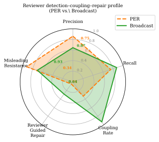
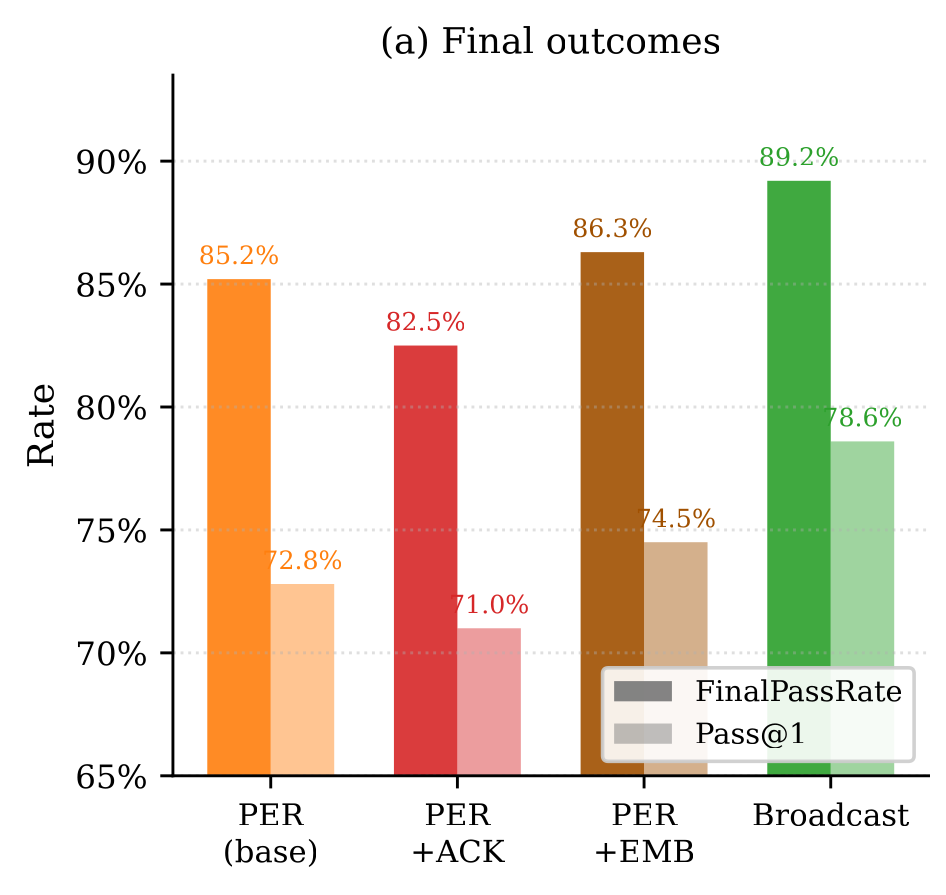

00Abstract
Many math- and science-oriented agent systems use hierarchical designs with specialized reviewer roles, assuming that a dedicated review stage should help turn wrong candidates into correct ones. We test this assumption on 4,181 verifier-grounded Omni-MATH problems using matched gpt-oss-120b actors. Collaboration adds little on the easiest tiers, but from tier 4 onward the gains open sharply; in this harder regime, broadcast-style peer discussion reaches higher final accuracy than a planner-executor-reviewer pipeline (PER). We ask whether this gap is explained by reviewer quality or by whether critique changes the next answer the protocol carries forward. It is not explained by reviewer precision alone: PER's reviewer is more precise than broadcast's (0.861 vs. 0.644), yet evaluator-verified useful critique is much less likely to change the next candidate and produces lower reviewer-guided repair. These results show that reviewer detection quality and critique uptake are empirically separable. Within matched PER interventions, forcing explicit acknowledgment lowers final accuracy, while embedding reviewer guidance directly in the solver's working context partially improves follow-through without closing the gap. Overall, reviewer-centric evaluation can overstate system quality: a protocol may spot errors well yet still fail to solve more problems if it does not act on those critiques.
Abstract as published in the arXiv v1 metadata record. The PDF's own abstract is slightly longer; where they differ, the downloadable artifact is arXiv v1.
01Why precise review need not produce repair
Many math- and science-oriented agent systems add a dedicated reviewer role, on the assumption that routing critique through a review stage turns wrong candidates into correct ones. That assumption bundles two separate things together.
A reviewer role has to do two jobs, and they can be measured apart:
- Detection — does a reviewer warning actually point at a real error? That is reviewer precision.
- Uptake and repair — once critique is verified useful, does the protocol change the next candidate it carries forward, and does that change fix the answer?
Reviewer-centric evaluation measures the first and treats the second as implied. This paper measures both and finds they come apart: the protocol with the better reviewer is the one that acts on critique less. The reason is structural rather than a property of the critique text — it is about where the critique lands and who has to agree before an answer is submitted.
The structural contrast
Two protocols differ in how critique reaches the answer. The rows below are the paper's Figure 1, re-rendered here as text.
advice fieldRe-rendering of Figure 1, Why reviewer quality and realized repair can diverge. In PER, information flow and decision flow can separate: a reviewer can send a correct warning without changing the next candidate. In broadcast, critique is embedded in shared candidate state and group approval, making bypass harder by design.
What this contrast is not. PER and broadcast are complete protocol designs that differ in several ways at once — routing, shared state, feedback delivery, prompts, and round structure. This is a configuration-level difference, not an isolated manipulation of any single mechanism. In particular, the approval gate cannot be isolated with the available toggle, so no causal claim is made about it. See Limitations.
02Method: four protocols, and a three-step decomposition
Every protocol solves the same 4,181 problems with the same model, the same evaluator contract, the same outer-loop budget, and the same memory reset policy. What varies is the collaboration structure.
The protocol ladder
| Protocol | Outer budget | Pre-submission structure | Feedback surface | Submission gate |
|---|---|---|---|---|
| Baseline LLM | 1 attempt | None | Evaluator pass/fail only | Direct one-shot submission |
| Single-Agent Iterative | Up to 3 | No reviewer; question-scoped repair ledgers reused across retries | Hinted evaluator feedback plus prior answer | Same solver resubmits after each failure |
| PER | Up to 3 | 2 inner rounds per attempt: Planner→Executor→Reviewer | Critique routed through separable advice fields | Reviewer routes back or approves; decision is role-local |
| Broadcast | Up to 3 | 4 discussion rounds plus up to 2 approval rounds | Shared candidate state, shared peer history, hinted evaluator feedback | Unanimous re-approval before submission |
Detection → uptake → repair
Rather than compare only final accuracy, each review episode is decomposed into three measurable steps. Every step is grounded in the evaluator's verdict on the answers involved, not in a judgement about the wording of the critique.
Every measurement is an operational answer-transition statistic: whether the answer string the protocol carries forward changed, and whether the evaluator judges the new one correct. None of it is a judgement about whether the solver understood, ignored, or deprioritised the critique — that would require semantic labelling this work does not have.
Setting
03Main findings
Scope of this section. Everything under Primary result is the paper's own setting: Omni-MATH 2 filtered, N = 4,181, actor and evaluator both openai/gpt-oss-120b, temperature 0. The Post-rebuttal robustness block that follows is separate supplementary evidence over five benchmarks and two actor families; it is not the paper's main claim and is labelled as such throughout.
Primary result: precision and uptake come apart
Paper Table 11, review-conditioned decomposition. N = 4,181; 10,804 PER and 11,587 broadcast review instances.
![Two panels. Left, a stacked bar chart of inner-loop failure modes over wrong-initial-candidate cases: PER splits 11% repair, 49% neglect, 40% try-but-fail, while broadcast splits 26% repair, 26% neglect, 48% try-but-fail — 2.3 times more neglect under PER. Right, a grouped bar chart of five metrics for PER and broadcast: precision 0.86 versus 0.64, recall 0.75 versus 0.87, CouplingRate 0.34 versus 0.93, guided repair 0.05 versus 0.29, misleading resistance 0.92 versus 0.71. A shaded box marks CouplingRate and guided repair as the coupling gap.](static/figures/fig_inner_loop_coupling.svg)
| Protocol | Precision | Recall | CouplingRate | Reviewer-guided repair | Misleading resistance |
|---|---|---|---|---|---|
| PER (role-based) | 0.861 | 0.754 | 0.336 | 0.051 | 0.921 |
| Broadcast deliberation | 0.644 | 0.872 | 0.935 | 0.286 | 0.708 |

Where the accuracy difference lives
Collaboration is worth little on the easiest problems and a great deal on the hardest ones. Over N = 4,181 the four rungs reach FinalPassRate 56.8% (baseline), 78.8% (single-agent iterative), 85.2% (PER) and 89.2% (broadcast); Pass@1 is 56.8 / 57.4 / 72.8 / 78.6%.

Within-PER interventions: directional, not causal
Two probes change only how critique reaches the solver, holding model family, reviewer setup and outer-loop budget fixed. Forcing the solver to acknowledge critique explicitly (ACK-required) lowers final accuracy, from 85.2% to 82.5%, and roughly doubles NeglectRate (0.488 → 0.792). Embedding reviewer guidance directly in the solver's working context (EMB) partially recovers, to 86.3%, without closing the gap to broadcast's 89.2%.

| Condition | FinalPassRate | Pass@1 | NeglectRate | Reviewer-guided repair | Useful coupling |
|---|---|---|---|---|---|
| PER | 85.2% | 72.8% | 0.488 | 0.051 | 0.336 |
| PER + ACK-required | 82.5% | 71.0% | 0.792 | 0.032 | 0.200 |
| PER + Embedded (EMB) | 86.3% | 74.5% | 0.698 | 0.044 | 0.247 |
| Broadcast | 89.2% | 78.6% | 0.262 | 0.286 | 0.935 |
Read these two probes as directional, not as a clean ablation. They are a within-PER comparison, not a causal identification: the tested ACK instruction does not distinguish compliance from distraction, format effects, or reasoning perturbation, and the EMB recovery does not reproduce on the smaller frozen replication subset (N = 195, where EMB is −1.03 pp against base PER). Nothing here establishes a mechanism, and nothing here is a claim about whether the solver understood the critique.
Robustness inside the paper's own setting
- The coupling metric is definition-stable. Legacy and strict-deterministic CouplingRate are numerically identical for both protocols (PER 0.336 = 1,766/5,253; broadcast 0.935 = 4,876/5,214), with strict-vs-legacy disagreement of 0/5,253 and 0/5,214. An equivalence-aware variant moves PER only to 0.340. (Paper Table 3.)
- The result is not a single-evaluator artifact. Replaying 16,724 saved submissions under three evaluators —
gpt-oss-120b,Meta-Llama-3.1-70B-Instruct,gemma-3-27b-it— gives instance-level disagreement of 3.38–5.76% and Cohen's κ 0.850–0.915. Re-tabulating those labels preserves the broadcast−PER ordering: +2.88 pp [1.82, 3.91] under GPT-OSS, +3.21 [2.13, 4.26] under Llama, +3.33 [2.22, 4.45] under Gemma-3. - But evaluator sensitivity is real where it matters most. On the hard collaborative slice (PER and broadcast, tiers 7–10, N = 1,694) disagreement roughly doubles, to 9.68% / 9.39% / 5.25% with κ 0.755 / 0.761 / 0.875.
- Run-to-run variation is smaller than the effect. On a frozen N = 195 subset, independent re-executions move PER FinalPass by about 0.5 pp and broadcast by about 2 pp, against a paired broadcast−PER gap of +4.10 to +6.67 pp. Direction reproduced on both tested backends; one of four intervals crosses zero.
![Panel a, grouped bar chart of pairwise evaluator disagreement rate. For each of three evaluator pairs a light bar shows the full benchmark of 16,724 instances and a dark bar the hard collaborative slice of 1,694 instances. gpt-oss versus Llama 5.8% then 9.7%; gpt-oss versus Gemma 4.3% then 9.4%; Llama versus Gemma 3.4% then 5.2%. Cohen's kappa is annotated above each bar, from 0.755 to 0.915. Panel b, heatmap of gpt-oss versus Llama disagreement by tier and protocol on the hard slice: tier 7 9.2% and 9.5%, tier 8 10.1% and 10.1%, tier 9 12.3% and 8.2%, tier 10 hatched as tiny with only 15 instances.](static/figures/fig_supp_eval_disagreement.svg)
Post-rebuttal robustness: five benchmarks, two actor families
Supplementary evidence, not the paper's claim. The matrix below is post-rebuttal work over five benchmarks (Omni-MATH, JEEBench, SciBench, LAB-Bench, MaScQA) and two actor families (gpt-oss-120b, gemma-4-31b). The paper itself reports Omni-MATH only. These cells use a different labelling pipeline from the main tables, so their absolute rates are not comparable to the 0.861 / 0.336 / 0.051 figures above; what travels is the ordering.
Across the ten dataset × actor cells:
- PER reviewer decision precision exceeds broadcast precision in 10/10 cells.
- Within PER, precision exceeds verified strict next-answer repair in 9/10 cells. The exception is JEEBench × Gemma-4, where only two follow-ups are evaluable — no stable conclusion is possible from that cell.
- Within broadcast, precision exceeds verified repair in 10/10 cells.
So the separation between detecting an error and repairing it is broad across models and domains. That is the claim, and it is the only claim this matrix supports.
The protocol ranking is not universal, and this page never asserts one. With Gemma-3-27b-it actors on a tier-sampled N = 835 subset the outcome ranking reverses — PER 65.6% vs. broadcast 58.7% FinalPassRate — while the precision–uptake separation persists (precision 0.881 vs. 0.722; uptake 0.092 vs. 0.742; repair 0.009 vs. 0.174). Which protocol wins is setting-dependent. What survives across settings is the separability.
Per-cell numbers for the ten dataset × actor cells
| Benchmark | Actor | PER precision | BC precision | PER uptake | BC uptake | PER repair | BC repair | PER repair n |
|---|---|---|---|---|---|---|---|---|
| Omni-MATH | GPT-OSS-120B | 0.748 | 0.537 | 0.383 | 0.295 | 0.036 | 0.036 | 362 |
| Omni-MATH | Gemma-4-31B | 0.684 | 0.346 | 0.254 | 0.096 | 0.057 | 0.012 | 316 |
| LAB-Bench | GPT-OSS-120B | 0.707 | 0.413 | 0.286 | 0.257 | 0.077 | 0.075 | 26 |
| LAB-Bench | Gemma-4-31B | 0.794 | 0.576 | 0.400 | 0.228 | 0.400 | 0.049 | 5 |
| SciBench | GPT-OSS-120B | 0.911 | 0.583 | 0.636 | 0.169 | 0.000 | 0.032 | 11 |
| SciBench | Gemma-4-31B | 0.976 | 0.611 | 0.650 | 0.162 | 0.100 | 0.031 | 20 |
| MaScQA | GPT-OSS-120B | 0.750 | 0.340 | 0.222 | 0.182 | 0.111 | 0.034 | 9 |
| MaScQA | Gemma-4-31B | 1.000 | 0.438 | 0.500 | 0.182 | 0.000 | 0.091 | 2 |
| JEEBench | GPT-OSS-120B | 0.647 | 0.237 | 0.333 | 0.143 | 0.167 | 0.083 | 6 |
| JEEBench | Gemma-4-31B | 1.000 | 0.302 | 1.000 | 0.278 | 1.000 | 0.176 | 2 |
Read the last column first. Eight of the ten cells rest on fewer than 30 evaluable PER follow-ups, and five rest on fewer than ten. The JEEBench × Gemma-4 row has n = 2: its 1.000 entries are two out of two events, not a measured rate, and that cell is the one exception to the 9/10 ordering. Treat every sparse cell as exploratory. Only the two Omni-MATH rows carry enough events to stand on their own.
Uptake columns are shown for completeness and are the reason a broader ordering claim is not made: PER strict uptake is lower than broadcast's in 0/10 cells, and PER repair is lower in 3/10. Any statement that PER has lower uptake or repair across all settings would be false here.
04What is released, and how to reproduce it
The target reader is someone with no access to the authors' machines, storage, endpoints or credentials. Everything below is designed to work from the public repository and the public dataset alone.
Traces & labels
Per-episode symmetric review transitions, per-cell derived tables and the evaluator-replay labels, on Hugging Face. The pinned intermediate table ships inside the release so Track A does not depend on any private upstream.
Analysis & protocol code
The analysis pipeline that turns traces into the published tables, the protocol runtime, the exact matched configs, and the regression tests for the resource-accounting fix.
Figures & tables
The figure-regeneration script and the aggregate CSVs it reads, so every published figure can be rebuilt from the released tables without re-running inference.
Shipped in the repository under figures/ and report/.
Two tracks, and which one answers your question
| Track A — offline artifact reproduction | Track B — live protocol re-execution | |
|---|---|---|
| Needs a model endpoint? | No. Zero model calls. | Yes — your own OpenAI-compatible endpoint, supplied as base_url + api_key from the environment. |
| Entry point | make reproduce-analysis |
make smoke-live for a few problems; full-scale instructions in the repository. |
| What it regenerates | The central result tables, the process metrics, the evaluator-replay summaries, the uncertainty estimates, the post-rebuttal robustness matrix, and the publication and website figures. | Fresh trajectories under any of the four protocols, from which the same analysis can then be run. |
| Determinism | Deterministic and checksum-verifiable. Outputs match exactly, or within documented numerical tolerances. | Expected to vary. There is no seed: the hosted endpoint runtime is not frozen and exposes none, so every run is an independent execution. |
| Cost and time | About a minute on a normal laptop for the core pipeline. No GPU, no HPC allocation. | Depends on your endpoint. The smoke target is deliberately tiny. ALCF and PBS are not required — nothing in the release hardcodes a private endpoint. |
| If your numbers differ | That is a bug — please open an issue. The released checksums pin the inputs. | Expect PER FinalPass to move about ±0.5 pp and broadcast about ±2 pp between independent executions (measured on a frozen N = 195 subset). The broadcast > PER direction reproduced on both tested backends, but one of four intervals crossed zero. |
Get started
# 1. get the code
git clone https://github.com/ChihHsuan-Yang/NeurIPS26_Precise-but-Uncoupled.git
cd NeurIPS26_Precise-but-Uncoupled
# 2. get the data (no credentials needed once the dataset is public)
make fetch-data
# 3. Track A — verify checksums, then rebuild every table and figure.
# No model calls. No endpoint. No GPU.
make verify-checksums
make reproduce-analysis# Track B — re-run a protocol against YOUR OWN model service.
# Any OpenAI-compatible endpoint works; nothing private is baked in.
export OPENAI_BASE_URL="https://your-endpoint.example/v1"
export OPENAI_API_KEY="your-key"
make smoke-live # a handful of problems, minutes not hoursThe public model identifiers used in the paper are openai/gpt-oss-120b (all acting roles and the evaluator) and, for the appendix cross-family replication, gemma-3-27b-it with the evaluator still fixed to gpt-oss-120b. Decoding was temperature 0 throughout. The repository's README carries the authoritative, versioned form of these commands; if this page and the README disagree, the README is correct.
An honest note about cross-linking. arXiv v1's comments field currently advertises a different page — the authors' AgentsSci resource site — and contains no link to this page or to the repository. Until an arXiv v2 is submitted, the paper of record does not link here. The v1 text says only that "code and data will be released after institutional approval"; this release is what fulfils that statement.
Licensing and data use — read before you download
The released dataset spans five benchmarks and inherits their terms. Two of them restrict what you may do.
- MaScQA is CC BY-NC-SA 4.0 — NonCommercial. Commercial use is not allowed.
- LAB-Bench is CC BY-SA 4.0 — ShareAlike, and carries an upstream do-not-train request. The LAB-Bench contamination canary is preserved verbatim in the release; do not strip it, and please honour the upstream request not to train on that material.
Because the release combines these sources, the combined artifact inherits both the NonCommercial and the ShareAlike conditions. It is published under a composite licence rather than a single permissive one, with a machine-readable per-source table so you can filter to the subset whose terms suit your use.
| Source benchmark | Licence | Practical effect |
|---|---|---|
| Omni-MATH 2 | Apache-2.0 | Permissive; commercial use allowed under upstream terms. |
| JEEBench | MIT | Permissive; commercial use allowed under upstream terms. |
| SciBench | MIT | Permissive; commercial use allowed under upstream terms. |
| LAB-Bench | CC BY-SA 4.0 | ShareAlike: derivatives must carry the same licence. Upstream asks that it not be trained on. Canary preserved. |
| MaScQA | CC BY-NC-SA 4.0 | NonCommercial — commercial use not allowed. ShareAlike also applies. |
The models used are third-party public checkpoints under their own terms — openai/gpt-oss-120b is Apache-2.0. The paper itself is on arXiv under the arXiv.org perpetual non-exclusive license 1.0, which is not a Creative Commons licence.
05What an uncoupled episode looks like
The three-step decomposition is not an abstraction over the data — it is read off individual answer transitions. Below are real transitions from the released table, all drawn from Omni-MATH (Apache-2.0) so that nothing here is encumbered by the NonCommercial or ShareAlike terms above.
Each row is one review episode where the reviewer asked for a revision and the candidate in hand was in fact wrong — a true-positive detection. All six are drawn from the strict pre-gate population defined below, so every "after" answer is the actor's own immediate response to the critique rather than a system-selected candidate. What varies is what happened next.
| Protocol | Answer before review | Answer after review | Outcome |
|---|---|---|---|
| PER | \frac{7}{16} | \frac{7}{16} | Neglectedflagged answer was in fact wrong; the candidate did not move |
| PER | 72 | 72 | Neglectedsame answer carried forward |
| PER | 72 | 8+16\sqrt{2} | Changed, still wronguptake happened; repair did not |
| PER | 96 | 192 | Repairedchanged and now correct |
| Broadcast | 8 + 4\sqrt{2} | 8 + 4\sqrt{2} | Neglectedhappens under broadcast too, just less often |
| Broadcast | 132 | 252 | Repaired |
Counting these transitions requires care, because the two protocols are not eligible on the same terms. Over the whole benchmark there are 1,992 such useful-review episodes under PER and 1,742 under broadcast. Only a subset of each has an answer pair that parses on both sides and records the actor's own immediate response rather than a system-selected candidate: the strict pre-gate population, n = 379 for PER and n = 533 for broadcast. On that population, and on that population for both protocols:
| PER | Broadcast | |
|---|---|---|
| Useful-review episodes | 1,992 | 1,742 |
| Strict pre-gate population n | 379 | 533 |
| Answer unchanged | 234 | 376 |
| Changed, still wrong | 115 | 53 |
| Repaired | 13 | 16 |
The remaining changed rows in each column are transitions the evaluator did not label on both sides, so they support no repair verdict either way.
Why the strict population, and not simply everything that parses. Under broadcast, a further 445 parseable episodes are excluded because a system-selected candidate update intervened before the actor responded — the answer moved, but not as an immediate reply to the critique. Counting those would attribute the approval gate's own bookkeeping to critique uptake, which is precisely the confound the strict definition exists to remove; it would raise broadcast's apparent repair count from 16 to 67 without a single additional actor response. PER has no such rows — the strict filter removes nothing from it — so including them would compare the two protocols over different populations. This is also why no causal claim about the approval gate appears on this page: the gate changes what is even measurable, as noted in Limitations.
What these rows are and are not. They are answer-string transitions with an evaluator verdict attached. The label "Neglected" means the answer did not change, not that the solver read the critique and disregarded it, and not that the critique was well written. This release contains no semantic labelling of critique text, so no claim of that kind is made anywhere. Note also that most episodes never reach the strict population at all — usually because one side of the answer pair could not be parsed — so the counts above are over that restricted remainder, not over all 1,992 and 1,742 episodes. The released table carries an explicit exclusion reason for every row, which is what makes the two populations auditable.
06Limitations
Four limits shape what can and cannot be concluded. The first three bound the science; the fourth is a defect in the published artifact that this release corrects.
1. Benchmark and model scope
The paper's result is measured on one benchmark — Omni-MATH 2 filtered, N = 4,181 — with one actor family, gpt-oss-120b, serving every role including the evaluator. The appendix adds a Gemma-3 cross-family replication on a tier-sampled N = 835, and the post-rebuttal matrix adds four further benchmarks with Gemma-4 actors. That is two model generations and five benchmarks in total. Nothing here generalises to model families that were not tested. Two tiers of the main benchmark, tier 3 (n = 20) and tier 10 (n = 15), are too small to support tier-level conclusions, and several post-rebuttal cells have fewer than ten evaluable follow-ups.
Relatedly: which protocol wins is setting-dependent. Gemma-3 actors reverse the accuracy ranking. This page makes no universal claim that one protocol beats the other.
2. No causal isolation of the approval gate
The natural mechanistic story — "collective re-approval forces uptake" — is not established here, and cannot be with the available controls. Turning the approval gate off changes six of seven required invariants at once, so the toggle cannot isolate the gate's effect. PER and broadcast are complete protocol designs differing jointly in routing, shared state, feedback delivery, prompts and round structure; the comparison is configuration-level and descriptive. The ACK and EMB probes are directional within-PER evidence, not a clean ablation. The isolated causal effect of any single mechanism remains an open question.
3. Operational metrics, not semantic ones
CouplingRate and the repair rates are answer-transition statistics grounded in the evaluator's verdict. They say nothing about whether critique text was correct in its reasoning, whether the solver understood it, or whether a neglect was reasonable. A blinded taxonomy of why critique was neglected would require per-problem intervention traces that were not retained, so it is not possible from this release. Separately, the evaluator is an LLM: on the hardest collaborative slice, independent evaluators disagree on about 5–10% of instances, which is exactly where answer equivalence is most ambiguous.
4. The legacy cost accounting in arXiv v1 is invalid — and is withdrawn here
Do not use the token, model-call, or cost numbers printed in arXiv v1. The harness reused one solver object per worker and the token counters were never reset between problems, so the recorded per-problem token and model-call figures are cumulative within a worker rather than per problem. The defect was confirmed independently at both the code and the data level: the exported counters show a sawtooth reset pattern, and averaging the cumulative snapshots reproduces the published means exactly.
Exact recovery is not possible — no worker-boundary metadata survived the export and no lower-level request logs were retained. Everything downstream of those fields is therefore withdrawn: the token columns of the main and intervention tables, the cost-per-solve figures, the cost-performance frontier, the verifier-cost break-even thresholds, and the per-tier deployment guidance. Those figures and tables are deliberately not shown on this page.
What survives, and is used here:
- Every accuracy result. FinalPassRate, Pass@1, the tier structure, the three-evaluator replay and all the review-transition labels are unaffected — they never depended on the token counters.
- Wall-clock time, retained per trajectory in the released data. Useful as a realized-latency measure, but it is not a compute-matched comparison.
Evaluator call accounting is under review and is not published here. Those counts come from a different counter than the token fields, but an unresolved discrepancy in how they were recorded means they are withheld pending re-derivation rather than presented as cleared. No per-problem evaluator or model call figure appears anywhere on this page.
A compute-matched PER–broadcast comparison is infeasible in this harness: there is no aggregate generation-token ceiling to match on. In particular, the deeper-reflection PER variant is an accuracy stress test only and must not be described as token-matched. The released code carries the counter-reset fix and three regression tests, so runs made with the current harness do not have this defect — but the published legacy values cannot be repaired retroactively.
07Citation
Please cite the arXiv preprint.
@misc{yang2026preciseuncoupled,
title = {Precise but Uncoupled: Reviewer Precision Does Not Guarantee
Critique Uptake in Multi-Agent Math Reasoning},
author = {Yang, Chih-Hsuan and Jiang, Jingyan and Vasudevan, Vikram and
Yang, Cheng-Hau and Zheng, Huihuo and Chen, Le and
Huerta, Eliu A. and Vishwanath, Venkatram and
Foster, Ian T. and Thakur, Rajeev},
year = {2026},
eprint = {2607.15388},
archivePrefix = {arXiv},
primaryClass = {cs.AI},
doi = {10.48550/arXiv.2607.15388},
url = {https://arxiv.org/abs/2607.15388}
}08Team and acknowledgments
Authors
| # | Author | Affiliation |
|---|---|---|
| 1 | Chih-Hsuan Yang | Argonne National Laboratory — corresponding author |
| 2 | Jingyan Jiang | Argonne National Laboratory |
| 3 | Vikram Vasudevan | Oregon State University |
| 4 | Cheng-Hau Yang | Argonne National Laboratory |
| 5 | Huihuo Zheng | Argonne National Laboratory |
| 6 | Le Chen | Argonne National Laboratory |
| 7 | Eliu A. Huerta | Argonne National Laboratory; University of Chicago |
| 8 | Venkatram Vishwanath | Argonne National Laboratory |
| 9 | Ian T. Foster | Argonne National Laboratory; University of Chicago |
| 10 | Rajeev Thakur | Argonne National Laboratory |
Acknowledgments
This research used resources of the Argonne Leadership Computing Facility, a U.S. Department of Energy (DOE) Office of Science user facility at Argonne National Laboratory (ANL) operated under Contract No. DE-AC02-06CH11357. The work was also supported under the same contract by the DOE Office of Science's Advanced Scientific Computing Research Program and by Laboratory Directed Research and Development (LDRD) funding from ANL, provided by the Director, DOE Office of Science.
Related work from this group
This paper is one of several studies built on the same matched multi-protocol design. The group's resource site, AgentsSci — Measuring Multi-Agent Scientific Reasoning, collects the protocol definitions and the broader trace resources they share.